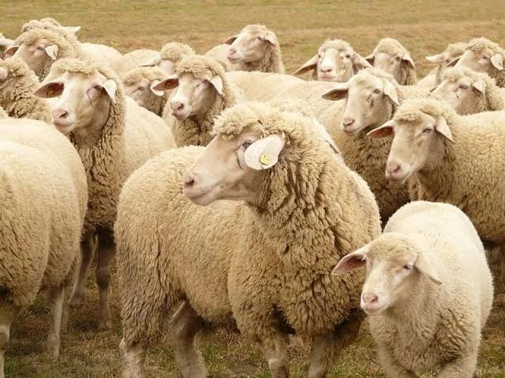
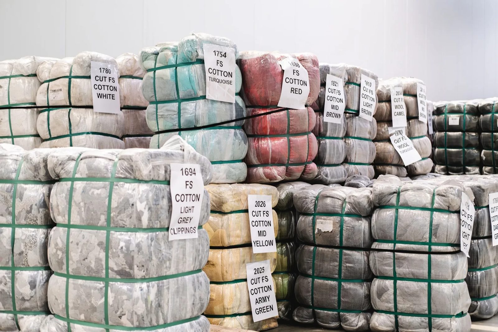

Naath Industries Pvt. Ltd. is a third-generation enterprise and one of India's leading indenting houses. Since 1981 we have represented reputed suppliers from around the world and served clients across India in four sectors: wools, recycling, industrial wipers and mixed rags.
A legacy across generations
A worldwide supplier network
Best prices, timely orders
Trusted by buyers & suppliers
We connect Indian buyers with reputed suppliers around the world in four product sectors.

Raw, greasy and scoured wools plus wool wastes from trusted origins worldwide, indented for spinners and woollen mills across India.
Explore
Used clothing and textile wastes, mutilated at origin for recycling: rags, synthetics, cotton and denim, acrylic and sweaters.
ExploreWiping cloths cut from recovered textiles for engineering, automotive, printing and maintenance work.
ExploreAssorted recovered textiles of mixed fibres and colours, graded and baled for the recycling trade.
ExploreOver forty years of relationships with suppliers and buyers across continents. Hover over a country to see its name.